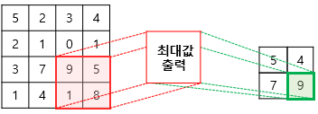
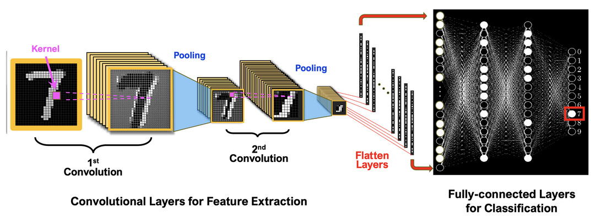

CNN의 핵심 구성요소
합성곱 계층

주요 특성:
- 필터(Filter/Kernel): 이미지의 특정 패턴(가장자리, 질감)을 감지하는 작은 행렬
- 스트라이드(Stride): 필터가 이미지를 스캔할 때 이동하는 픽셀 수
- 패딩(Padding): 입력 이미지의 가장자리에 0을 추가하여 출력 이미지의 크기를 조절
- 특징 맵(Feature Map): 입력 이미지의 특정 특징이 강조된 형태
풀링 계층

주요 특성:
- 목적: 특징 맵의 크기를 줄이고 중요한 정보를 유지
- 효과: 모델의 계산량 감소, 과적합 완화
- 불변성: 이미지의 이동이나 회전에 대한 불변성을 높임
- 주요 유형: Max Pooling(가장 흔함), Average Pooling
CNN의 전체 구조
입력층
분류기
출력층
